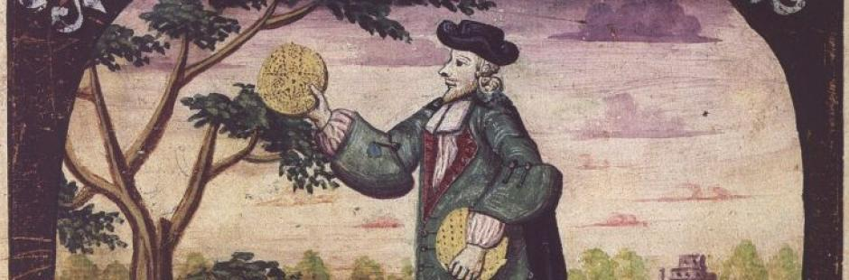

Unleavened Bread That Came Down from Heaven
Unleavened bread with bitter herbs: a simple menu and a bottomless depth.
At the same time as the feast of Pesach (Passover), and closely bound up with it, comes the Feast of Unleavened Bread, whose very name reveals its culinary nature. Interesting, isn't it? Throughout all seven days of this feast God speaks to us through the most common kind of food, bread. And this bread is no longer just a food product that keeps the body going, but a message from the Most High! UNLEAVENED BREAD THAT CAME DOWN FROM HEAVEN is what the Israelites ate when they celebrated Pesach and the Feast of Matzot (Unleavened Bread) in the wilderness.
The recipe and instructions for baking matzah are here.
The first Pesach in freedom
On the first day of the month of Aviv, in the second year after the Israelites came out of Egypt, God commands Moshe (Moses) to keep Pesach. This means that our fathers had to make matzot for themselves and eat this unleavened bread for seven days, throughout the feast.
The question arises: where could so much flour be found in the second year of wandering in the wilderness? If not wheat flour, then at least barley or oat flour. It is very hard to imagine that they had such stores of grain that they lasted into the second year of wandering for so many people.
Most likely the answer in this situation was the manna. They made matzah from manna, from the bread that came down from heaven. UNLEAVENED BREAD THAT CAME DOWN FROM HEAVEN.
Our sages still debate whether manna was a grain. We cannot know this for certain. The very word "man" in Hebrew means "what is it?" When they saw it scattered on the ground, they began to ask each other: "What is it?"
In any case we know for certain that it was bread without leaven. That is the law of Pesach. Leaven is a symbol of sin.
This is very striking: only once in the whole history of mankind did God feed His people Israel with matzah made from the bread that He Himself rained down from heaven on our fathers in the wilderness of Sinai. And it was the first time they kept Pesach and ate matzah as free people.
On the Passover night before leaving the land of Egypt, the Israelites were in fact still Pharaoh's slaves and were within the territory of the Egyptian empire. This was the first and only time they ate matzah from heaven while completely free, slaves to no one, only to the Most High.
We are dealing with very deep spiritual processes, which the Most High set in motion there together with the sacred service in the sanctuary of people made free and righteous by His righteousness.
1 וַיְדַבֵּר יְהוָה אֶל־מֹשֶׁה בְמִדְבַּר־סִינַי בַּשָּׁנָה הַשֵּׁנִית לְצֵאתָם מֵאֶרֶץ מִצְרַיִם בַּחֹדֶשׁ הָרִאשׁוֹן לֵאמֹר׃
2 וְיַעֲשׂוּ בְנֵי־יִשְׂרָאֵל אֶת־הַפָּסַח בְּמוֹעֲדוֹ׃
3 בְּאַרְבָּעָה עָשָׂר־יוֹם בַּחֹדֶשׁ הַזֶּה בֵּין הָעֲרְבַּיִם תַּעֲשׂוּ אֹתוֹ בְּמֹעֲדוֹ כְּכָל־חֻקֹּתָיו וּכְכָל־מִשְׁפָּטָיו תַּעֲשׂוּ אֹתוֹ׃
4 וַיְדַבֵּר מֹשֶׁה אֶל־בְּנֵי יִשְׂרָאֵל לַעֲשֹׂת הַפָּסַח׃
5 וַיַּעֲשׂוּ אֶת־הַפֶּסַח בָּרִאשׁוֹן בְּאַרְבָּעָה עָשָׂר יוֹם לַחֹדֶשׁ בֵּין הָעַרְבַּיִם בְּמִדְבַּר סִינָי כְּכֹל אֲשֶׁר צִוָּה יְהוָה אֶת־מֹשֶׁה כֵּן עָשׂוּ בְּנֵי יִשְׂרָאֵל׃
1 And the LORD spoke unto Moshe in the wilderness of Sinai, in the first month of the second year after they were come out of the land of Egypt, saying:
2 Let the children of Israel keep the Passover in its appointed season.
3 In the fourteenth day of this month, at dusk, ye shall keep it in its appointed season; according to all the statutes of it, and according to all the ordinances thereof, shall ye keep it.
4 And Moshe spoke unto the children of Israel, that they should keep the Passover.
5 And they kept the Passover in the first month, on the fourteenth day of the month, at dusk, in the wilderness of Sinai; according to all that the LORD commanded Moshe, so did the children of Israel.
Bemidbar (Num.) 9:1–5
The commandment to Israel to keep the Passover
Making matzah with Misha Rubin
Ephraim: All Israel is excited: we are approaching Pesach and making the last preparations.
Today the subject of our study is the central dish on the festive Seder table. This feast is also called the Feast of Matzot, or of Unleavened Bread.
I don't know how realistic it is to make matzah at home (or in wilderness conditions, as our fathers once did), but we have an expert on the subject: a top-class cook, chef Misha Rubin. I would say he is a poet among cooks.

I want to challenge you: what do you say, is it realistic to make matzah at home? Real matzah! Not just to play with and throw away, but something we can eat at the Pesach Seder? Kosher!
Misha Rubin: Of course it is quite realistic, and I will prove it to you right now.
Ephraim: Tell me, can matzah be made in the wilderness? Without pots and equipment, without gas and so on?
Misha Rubin: Of course. The main thing is to have something to make it from: flour and water, and a good flat stone heated in the sun.
Ephraim: So, everyone freeze! Now we are going to make real Israeli matzah at home. What do we need for it?
Misha Rubin: All we need is flour produced according to all the rules (at no stage of its production may it have come into contact with water or steam, so that no fermentation has begun in it). This is Israeli flour. Plus water, and we start kneading. The proportion is two to one, that is, two parts flour to one part water (by weight). The main thing is to knead our flour well. And it is important to keep the proportion I mentioned.
Then we begin to pound the matzah.
Ephraim: What does it mean to pound the matzah?
Misha: It means to pack the dough down so that it can be worked.
Ephraim: I heard that you have known matzah-making since childhood, when you lived with your parents in Minsk.
Misha Rubin: Yes, my grandfather had a contract for making matzah. In the former Soviet Union he had a big three-storey house with a cellar. In that very cellar, every January, they began baking matzah for the whole city. Times were hard then; food was rationed. And people brought their own flour.
In the workshop there was a woman who did nothing but knead the dough. There was also a man who did the pounding. There was a special machine with two rollers and a man at it who turned the rollers (he was called the machinist). Another man fed the dough between the rollers, and so the dough was rolled out.
True, all this was forbidden by law. And the police, who also liked to eat, would come to inspect whether we were printing a newspaper in our cellar.
Ephraim: I don't understand. The law forbade making bread?
Misha Rubin: Matzah was forbidden.
Ephraim: When was this?
Misha Rubin: We started in 1968.
Ephraim: So I don't understand: in the former Soviet Union it was forbidden to bake bread?
Misha Rubin: The point is that it was a private business. It was needed because the state did not produce matzah, since that was connected with religion. And the state was against all religion.
Ephraim: So they were against both. The state saw your grandfather as a bourgeois (a private businessman). And then it saw him as a religious Jewish bourgeois, one might say a "zhid"?
Misha Rubin: Right. My grandfather made this matzah in secret. The problem was that the KGB and the police wanted to eat.
Ephraim: So they had their own business too?
Misha Rubin: They worked as a "roof", protection. They came, got their "drinks and so on", and the problem was solved.
Ephraim: So everyone did his own job?
Misha Rubin: People earned quite well from it. There were people who collected flour from people and then delivered the finished product.
Ephraim: Tell me, when you helped your grandfather in this business, what was your job?
Misha Rubin: Hanging the raw matzah on a stick; then it was put into the oven. But it had to be done very quickly. I only hung the matzah, and someone else was responsible for baking. This man took the stick with the matzah from me (six pieces on one stick) and put it into the oven. And with a wooden paddle he took the finished matzah out of the oven.
The oven was prepared and lit during the night. Then the coals were raked to one side, and all day the oven could produce matzah.
Grandfather's workshop was very well known in the city. People came for matzah from the whole area and the villages. We made about a hundred to a hundred and fifty kilograms a day.
Everything was done by hand. Although a machine was used, it was worked by hand: there was a man who turned the huge rollers and the press.
Usually our Jews liked very thin matzah, so that it was crisp. Egg matzah was made too.
There was a time when the police gave us no peace. Once a man from them came and asked: "Well, are you printing a newspaper here?" They wanted money. "No," we answered, "we are just making matzah." "And do you put Christian blood in it?"
Ephraim: Meaning the blood of Christian babies?
Misha Rubin: "What nonsense," we told them, "what blood?" They believed that Jewish matzah was certainly connected with Christian blood…
In our workshop it went like this: a man standing at the oven, a man hanging the matzah on the stick, one putting the matzah into the oven, one kneading the dough, the pounder, the one turning the wheel of the rollers, the one feeding the dough into the machine and, last, the one receiving the finished matzah. Eight people in all.
Okay. Now we make little holes so that the dough doesn't rise, and we will bake the matzah.
Ephraim: And where did this business of yours operate, in a private flat?
Misha Rubin: Yes, in the cellar. It was absolutely kosher. A special inspector came, a mashgiach kashrut (a member of the Jewish community who supervises the kashrut of the whole production). My grandfather had a good name in the city; people trusted him. And the mashgiach confirmed that everything was absolutely kosher. There were many believing people in Minsk, and so everything had to be done according to the law.
Author: Ephraim Kalish / Torah-Art